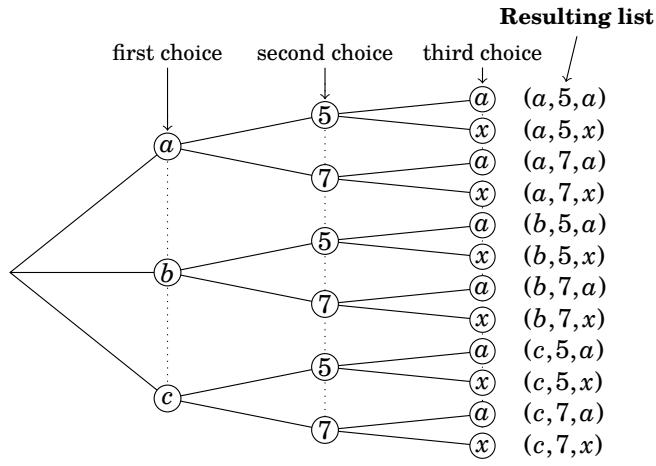
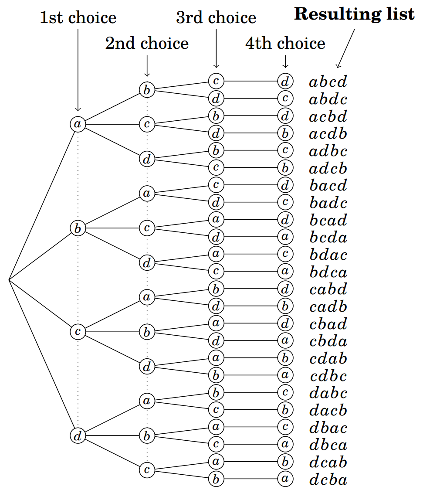
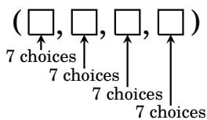
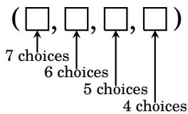
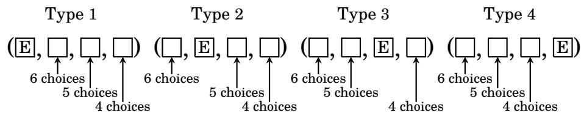
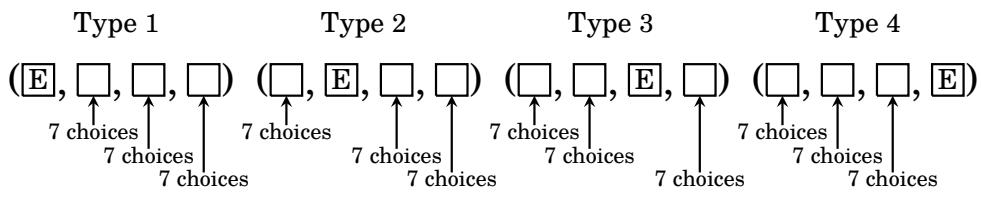
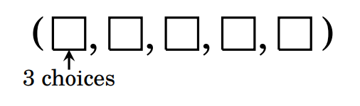
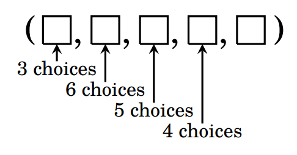
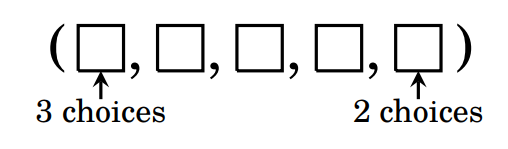
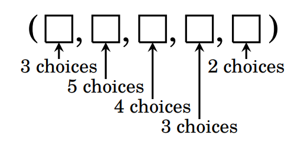

3.2 The Multiplication Principle¶
Many practical problems involve counting the number of possible lists that satisfy some condition or property. For example, suppose we make a list of length three having the property that the first entry must be an element of the set \(\{ a , b , c \}\), the second entry must be in \(\{5,7\}\) and the third entry must be in \(\{ a , x \}\). Thus \(( a , 5 , a )\) and \(( b , 5 , a )\) are two such lists. How many such lists are there all together? To answer this question, imagine making the list by selecting the first entry, then the second and finally the third. This is described in Figure 3.1. The choices for the first list entry are \(a , b\) or \(c\), and the left of the diagram branches out in three directions, one for each choice. Once this choice is made there are two choices (5 or 7) for the second entry, and this is described graphically by two branches from each of the three choices for the first entry. This pattern continues for the choice for the third entry, which is either \(a\) or \(x\). Thus, in the diagram there are \(3 \cdot 2 \cdot 2 = 12\) paths from left to right, each corresponding to a particular choice for each entry in the list. The corresponding lists are tallied at the far-right end of each path. So, to answer our original question, there are 12 possible lists with the stated properties.

Figure 3.1. Constructing lists of length 3
In the above example there are 3 choices for the first entry, 2 choices for the second entry, and 2 for the third, and the total number of possible lists is the product of choices \(3 \cdot 2 \cdot 2 = 12\). This kind of reasoning is an instance of what we will call the multiplication principle. We will do one more example before stating this important idea.
Consider making a list of length 4 from the four letters \(\{ a , b , c , d \}\), where the list is not allowed to have a repeated letter. For example, \(abcd\) and \(cadb\) are allowed, but \(aabc\) and \(cacb\) are not allowed. How many such lists are there? Let’s analyze this question with a tree representing the choices we have for each list entry. In making such a list we could start with the first entry: we have 4 choices for it, namely \(a , b , c\) or \(d\), and the left side of the tree branches out to each of these choices. But once we’ve chosen a letter for the first entry, we can’t use that letter in the list again, so there are only 3 choices for the second entry. And once we’ve chosen letters for the first and second entries we can’t use these letters in the third entry, so there are just 2 choices for it. By the time we get to the fourth entry we are forced to use whatever letter we have left; there is only 1 choice. The situation is described fully in the below tree showing how to make all allowable lists by choosing 4 letters for the first entry, 3 for the second entry, 2 for the third entry and 1 for the fourth entry. We see that the total number of lists is the product \(4 \cdot 3 \cdot 2 \cdot 1 = 24\).
{kind=link}

Figure 3.2. Constructing lists from letters in \(\{ a , b , c , d \}\), without repetition.
These trees show that the number of lists constructible by some specified process equals the product of the numbers of choices for each list entry. We summarize this kind of reasoning as an important fact.
Fact 3.1: (Multiplication Principle) Suppose in making a list of length \(n\) there are \(a_{1}\) possible choices for the first entry, \(a_{2}\) possible choices for the second entry, \(a_{3}\) possible choices for the third entry, and so on. Then the total number of different lists that can be made this way is the product \(a_{1} \cdot a_{2} \cdot a_{3} \cdots a_{n}\).
In using the multiplication principle you do not need to draw a tree with \(a_{1} \cdot a_{2} \cdots a_{n}\) branches. Just multiply the numbers!
Example 3.1: A standard license plate consists of three letters followed by four numbers. For example, \(JRB-4412\) and \(MMX-8901\) are two standard license plates. How many different standard license plates are possible?
Solution: A license plate such as \(JRB-4412\) corresponds to a length-7 list \(( J , R , B , 4 , 4 , 1 , 2 )\), so we just need to count how many such lists are possible. We use the multiplication principle. There are \(a_{1} = 26\) possibilities (one for each letter of the alphabet) for the first entry of the list. Similarly, there are \(a_{2} = 26\) possibilities for the second entry and \(a_{3} = 26\) possibilities for the third. There are \(a_{4} = 10\) possibilities for the fourth entry. Likewise \(a_{5} = a_{6} = a_{7} = 10\). So there is a total of \(a_{1} \cdot a_{2} \cdot a_{3} \cdot a_{4} \cdot a_{5} \cdot a_{6} \cdot a_{7} = 26 \cdot 26 \cdot 26 \cdot 10 \cdot 10 \cdot 10 \cdot 10 = 175,760,000\) possible standard license plates.
Example 3.2: In ordering a café latte, you have a choice of whole, skim or soy milk; small, medium or large; and either one or two shots of espresso. How many choices do you have in ordering one drink?
Solution: Your choice is modeled by a list of form (milk, size, shots). There are 3 choices for the first entry, 3 for the second and 2 for the third. By the multiplication principle, the number of choices is \(3 \cdot 3 \cdot 2 = 18\).
There are two types of list-counting problems. On one hand, there are situations in which list entries can be repeated, as in license plates or telephone numbers. The sequence \(CCX-4144\) is a perfectly valid license plate in which the symbols \(C\) and \(4\) appear more than once. On the other hand, for some lists repeated symbols do not make sense or are not allowed, as in the (milk, size, shots) list from Example 3.2. We say repetition is allowed in the first type of list and repetition is not allowed in the second kind of list. (We will call a list in which repetition is not allowed a non-repetitive list.) The next example illustrates the difference.
Example 3.3: Consider lists of length 4 made with symbols \(A , B , C , D , E , F , G\)
(a) How many such lists are possible if repetition is allowed?
(b) How many such lists are possible if repetition is not allowed?
(c) How many are there if repetition is not allowed and the list has an \(E\)?
(d) How many are there if repetition is allowed and the list has an \(E\)?
Solutions: (a) Imagine the list as containing four boxes that we fill with selections from the letters \(A , B , C , D , E , F\) and \(G\), as illustrated below.

We have 7 choices in filling each box. The multiplication principle says the total number of lists that can be made this way is \(7 \cdot 7 \cdot 7 \cdot 7 = 2401\).
(b) This problem is the same as the previous one except that repetition is not allowed. We have seven choices for the first box, but once it is filled we can no longer use the symbol that was placed in it. Hence there are only six possibilities for the second box. Once the second box has been filled we have used up two of our letters, and there are only five left to choose from in filling the third box. Finally, when the third box is filled we have only four possible letters for the last box.

Thus there are \(7 \cdot 6 \cdot 5 \cdot 4 = 840\) lists in which repetition does not occur.
(c) We are asked to count the length-4 lists in which repetition is not allowed and the symbol \(E\) must appear somewhere in the list. Thus \(E\) occurs once and only once in each list. Let us divide these lists into four categories depending on whether the \(E\) occurs as the first, second, third or fourth entry. These four types of lists are illustrated below.

Consider lists of the first type, in which the \(E\) appears in the first entry. We have six remaining choices (\(A , B , C , D , F\) or \(G\)) for the second entry, five choices for the third entry and four choices for the fourth entry. Hence there are \(6 \cdot 5 \cdot 4 = 120\) lists having an \(E\) in the first entry. As shown above, there are also \(6 \cdot 5 \cdot 4 = 120\) lists having an \(E\) in the second, third or fourth entry. So there are \(120 + 120 + 120 + 120 = 480\) lists with exactly one \(E\).
(d) Now we seek the number of length-4 lists where repetition is allowed and the list must contain an \(E\). Here is our strategy: By Part (a) of this exercise there are a total of \(7 \cdot 7 \cdot 7 \cdot 7 = 7^{4} = 2401\) lists with repetition allowed. Obviously this is not the answer to our current question, for many of these lists contain no \(E\). We will subtract from 2401 the number of lists that do not contain an \(E\). In making a list that does not contain an \(E\), we have six choices for each list entry (because we can choose any one of the six letters \(A, B, C, D, F\) or \(G\)). Thus there are \(6 \cdot 6 \cdot 6 \cdot 6 = 6^{4} = 1296\) lists without an \(E\). So the answer to our question is that there are \(2401 - 1296 = 1105\) lists with repetition allowed that contain at least one \(E\).
Before moving on from Example 3.3, let’s address an important point. Perhaps you wondered if Part (d) could be solved in the same way as Part (c). Let’s try doing it that way. We want to count the length-4 lists (repetition allowed) that contain at least one \(E\). The following diagram is adapted from Part (c). The only difference is that there are now seven choices in each slot because we are allowed to repeat any of the seven letters.

We get a total of \(7^{3} + 7^{3} + 7^{3} + 7^{3} = 1372\) lists, an answer that is larger than the (correct) value of 1105 from our solution to Part (d) above. It is easy to see what went wrong. The list \((E, E, A, B)\) is of type 1 and type 2, so it got counted twice. Similarly \((E, E, C, E)\) is of type 1, 2 and 4, so it got counted three times. In fact, you can find many similar lists that were counted multiple times. In solving counting problems, we must always be careful to avoid this kind of double-counting or triple-counting, or worse.
The next section presents two new counting principles that codify the kind of thinking we used in parts (c) and (d) above (the addition and subtraction principles). Combined with the multiplication principle, they solve complex counting problems in ways that avoid the pitfalls of double counting. But first, one more example of the multiplication principle highlights another pitfall to be alert to.
Example 3.4: A non-repetitive list of length 5 is to be made from the symbols \(A , B , C , D , E , F , G\). The first entry must be either a \(B\), \(C\) or \(D\), and the last entry must be a vowel. How many such lists are possible?
Solution: Start by making a list of five boxes. The first box must contain either \(B\), \(C\) or \(D\), so there are three choices for it.
{kind=link}

Now there are 6 letters left for the remaining 4 boxes. The knee-jerk action is to fill them in, one at a time, using up an additional letter each time.
{kind=link}

But when we get to the last box, there is a problem. It is supposed to contain a vowel, but for all we know we have already used up one or both vowels in the previous boxes. The multiplication principle breaks down because there is no way to tell how many choices there are for the last box. The correct way to solve this problem is to fill in the first and last boxes (the ones that have restrictions) first.
{kind=link}

Then fill the remaining middle boxes with the 5 remaining letters.
{kind=link}

By the multiplication principle, there are then \(3 \cdot 5 \cdot 4 \cdot 3 \cdot 2 = 360\) lists.
The new principles to be introduced in the next section are usually used in conjunction with the multiplication principle. So work a few exercises now to test your understanding of it.
Exercises for Section 3.2¶
Consider lists made from the letters \(T , H , E , O , R , Y\), with repetition allowed.
(a) How many length-4 lists are there?
Answer
\(6 \cdot 6 \cdot 6 \cdot 6 = 6^{4} = 1,296\).
(b) How many length-4 lists are there that begin with \(T\)?
Answer
\(1 \cdot 6 \cdot 6 \cdot 6 = 6^{3} = 216\).
(c) How many length-4 lists are there that do not begin with \(T\)?
Answer
\(5 \cdot 6 \cdot 6 \cdot 6 = 5 \cdot 6^{3} = 1,080\).
Airports are identified with 3-letter codes. For example, Richmond, Virginia has the code \(RIC\), and Memphis, Tennessee has \(MEM\). How many different 3-letter codes are possible?
Answer
\(26 \cdot 26 \cdot 26 = 26^{3} = 17,576\).
How many lists of length 3 can be made from the symbols \(A, B, C, D, E, F\) if…
(a) … repetition is allowed.
Answer
\(6 \cdot 6 \cdot 6 = 6^{3} = 216\).
(b) … repetition is not allowed.
Answer
\(6 \cdot 5 \cdot 4 = 120\).
(c) … repetition is not allowed and the list must contain the letter \(A\). 🔴
Answer
These lists can be divided into three types. Type 1 consists of those lists of form A * *, Type 2 consists of strings of form * A *, and Type 3 consists of those strings of form * * A. By the multiplication principle there are \(1 \cdot 5 \cdot 4 = 20\) lists of each type, so there are \((1 \cdot 5 \cdot 4) + (5 \cdot 1 \cdot 4) + (5 \cdot 4 \cdot 1) = 20 \cdot 3 = 60\) lists where repetition is not allowed and that contain the letter \(A\).
(d) … repetition is allowed and the list must contain the letter \(A\). 🔴
Answer
Subtract the number of lists without the letter \(A\) in them, from the total number of lists that can be made. \((6 \cdot 6 \cdot 6) - (5 \cdot 5 \cdot 5) = 6^{3} - 5^{3} = 91\).
In ordering coffee you have a choice of regular or decaf; small, medium or large; here or to go. How many different ways are there to order a coffee?
Answer
\(2 \cdot 3 \cdot 2 = 12\).
This problem involves 8-digit binary strings such as \(10011011\) or \(00001010\) (i.e., 8-digit numbers composed of \(0\)’s and \(1\)’s).
(a) How many such strings are there?
Answer
\(2 \cdot 2 \cdot 2 \cdot 2 \cdot 2 \cdot 2 \cdot 2 \cdot 2 = 2^{8} = 256\).
(b) How many such strings end in \(0\)?
Answer
\(2 \cdot 2 \cdot 2 \cdot 2 \cdot 2 \cdot 2 \cdot 2 \cdot 1 = 2^{7} = 128\).
(c) How many such strings have \(1\)’s for their second and fourth digits?
Answer
\(2 \cdot 1 \cdot 2 \cdot 1 \cdot 2 \cdot 2 \cdot 2 \cdot 2 = 2^{6} = 64\).
(d) How many such strings have \(1\)’s for their second or fourth digits? 🔴
Answer
These strings can be divided into three types. Type 1 consists of those strings of form * 1 * 0 * * * *, Type 2 consists of strings of form * 0 * 1 * * * *, and Type 3 consists of those strings of form * 1 * 1 * * * *. By the multiplication principle there are \(2^{6} = 64\) strings of each type, so there are \(3 \cdot 64 = 192\) 8-digit binary strings whose second OR fourth digits are 1’s.
You toss a coin, then roll a dice, and then draw a card from a 52-card deck. How many different outcomes are there? How many outcomes are there in which the dice lands on ⚂? How many outcomes are there in which the dice lands on an odd number? How many outcomes are there in which the dice lands on an odd number and the card is a King?
Answer
How many different outcomes are there? \(2 \cdot 6 \cdot 52 = 624\).
How many outcomes are there in which the dice lands on ⚂? \(2 \cdot 1 \cdot 52 = 104\).
How many outcomes are there in which the dice lands on an odd number? \(2 \cdot 3 \cdot 52 = 312\).
How many outcomes are there in which the dice lands on an odd number and the card is a King? \(2 \cdot 3 \cdot 4 = 24\).
This problem concerns 4-letter codes made from the letters \(A, B, C, D, \ldots , Z\).
(a) How many such codes can be made?
Answer
\(26 \cdot 26 \cdot 26 \cdot 26 = 26^{4} = 456,976\).
(b) How many such codes have no two consecutive letters the same? 🔴
Answer
We use the multiplication principle. There are 26 choices for the first letter. The second letter can’t be the same as the first letter, so there are only 25 choices for it. The third letter can’t be the same as the second letter (but can be the same as the first letter), so there are still 25 choices for it. The fourth letter can’t be the same as the third letter (but can be the same as the first and second letters), so there are still 25 choices for it. Thus there are \(26 \cdot 25 \cdot 25 \cdot 25 = 26 \cdot 25^{3} = 406,250\) codes with no two consecutive letters the same.
A coin is tossed 10 times in a row. How many possible sequences of heads and tails are there?
Answer
\(2 \cdot 2 \cdot 2 \cdot 2 \cdot 2 \cdot 2 \cdot 2 \cdot 2 \cdot 2 \cdot 2 = 2^{10} = 1,024\).
A new car comes in a choice of five colors, three engine sizes and two transmissions. How many different combinations are there?
Answer
\(5 \cdot 3 \cdot 2 = 30\).
A dice is tossed four times in a row. There are many possible outcomes, such as ⚁⚅⚅⚂, or ⚂⚂⚂⚂. How many different outcomes are possible?
Answer
\(6 \cdot 6 \cdot 6 \cdot 6 = 6^{4} = 1,296\).